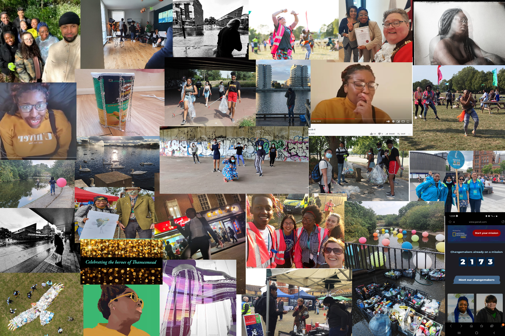
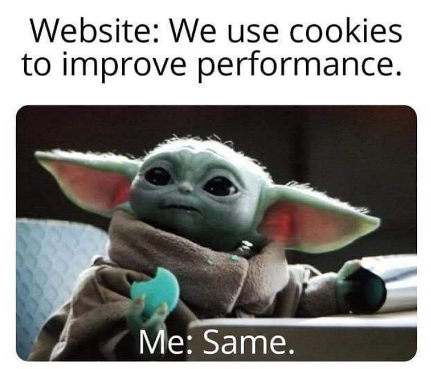

I mean, one side of A4 is soooooo limiting😭
But what if it wasn't on paper🧐
So here it is. A literal PAGE about me (I learnt how to code just for you guys😉)
ENJOY🥰
In terms of what I've done in Thamesmead. Let's just say I've done A LOT😅
I've always been told that curiosity killed the cat, but no one told me it died doing what it loved. I was always the shy and curious person. The listener, the supporter, but never the main character😔. I loved learning different things and my curiosity took me to places I never had the confidence to go alone, and that’s how I ended up living my best life in Thamesmead😎
Here's a little snippet 🤗
As you can see, I've done some things, a lot of them as voluntary roles (and many more that I just couldn't fit in!😓) and this is was all over the course of A YEAR🥳
What can I say, I am ONE with the force of Thamesmead
I've done everything ranging from art installations in the Thamesmead festival, writing my one and ONLY song😇, some spoken word, to even being featured on our very own Thamesmead radio and youtube channel, menotirng aspiring sound artists, multiple film shoots and many more that I can hopefully delve into in the interview
Honestly, at this point, you name it, I've done it😅 in some sort of way including, acting , directing, social media marketing and SOOOOOO much more
Of course I'm guessing you'll want to hear those songs and spoken word right 🤗
My answer will ALWAYS be: If something's important to you, you make time for it💁
I LOVE meeting new people and leanring different things and this is eveident from the differnet voluntary roles I've had ranging from a home for convicts detained under the Mental Health Act to even the Euros (both were VERY intresting experiences)
But Thamesmead has always been where I've given back the most. It really is The Land of Opportunity (sorry New York...😬)
So yes curiosity did kill the cat💀, but that doesn’t mean it didn’t die happy and with a big grin on its face😸. I believe that curiosity can teach you the best lessons and provide you with the most unexpected opportunities. So I have a lot of big dreams like winning a Nobel Prize and putting Thamesmead on the map because someone once told me: 'When you shoot for the sky, even if you don't land on the moon, you'll be amongst the stars'.